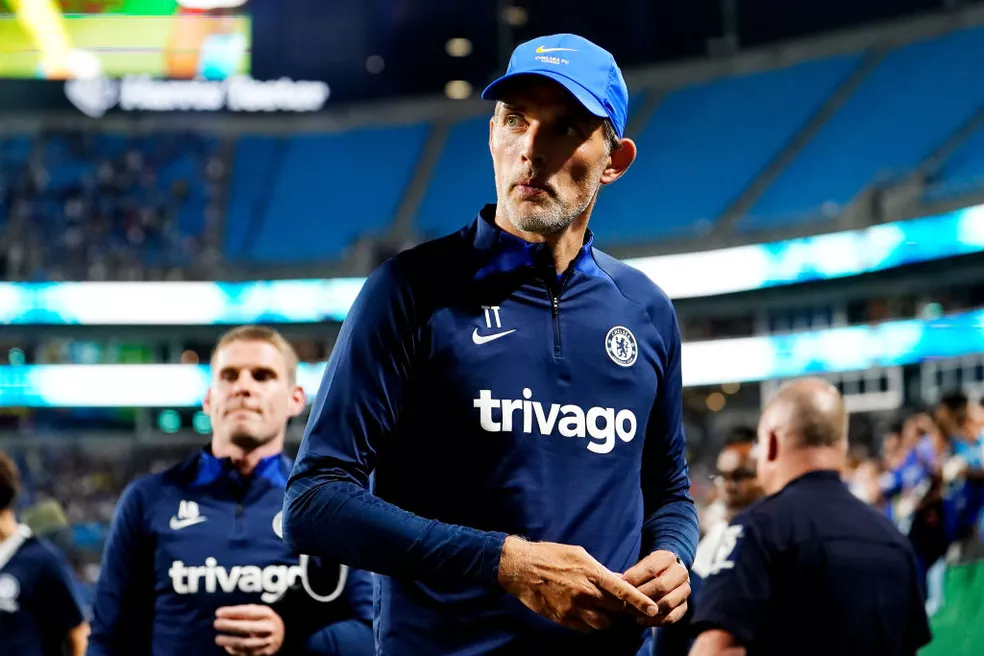

| Gonçalo Ramos se esquiva de pedir música no Fantástico: "Tem muitos palavrões, melhor nem mencionar"
Artilheiro da goleada de Portugal por 6 a 1 sobre a Suíça pede então música usada nas arenas da Copa do Mundo do Catar quando equipe faz gols: "A Minha Casinha", da banda Xutos e Pontapés 5 min Agora- em portugal |
|  | Imprensa alemã levanta possível saída de Hansi Flick do comando da seleção; Tuchel é especulado
Futuro do treinador pode depender de substituto de Oliver Bierhoff no cargo de diretor de futebol; ex-PSG e Chelsea é cotado como possível substituto caso haja mudança. Há 3 horas- em alemanha |
| De terceiro goleiro do Remo a atuação pelo Brasil na Copa do Mundo: a trajetória de Weverton
Origem no futebol acreano, início no profissional no Pará e ascensão após título da Série B do Brasileiro com a Portuguesa, se destacando em Athletico-PR e fazendo história com o Palmeiras. Há 1 hora- em copa do mundo |